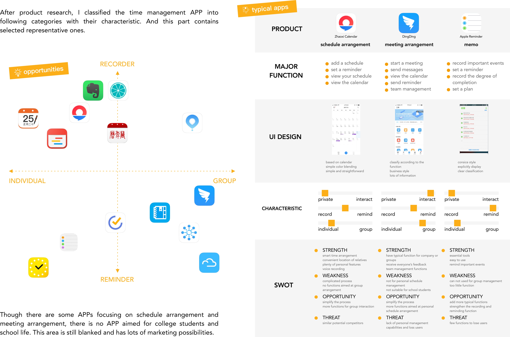

Schdule Management App Design
User Research / UX / UI
Individual Works
Beijing
Sept. 2016 - Dec. 2016
DESCRIPTION
For college students and teachers, there might be group discussions, research needs, classes and various student activities happening every day. They do not have fixed conference rooms or times to arrange for these activities. Therefore it is difficult to remember the time and places for all the scheduled events. Arranging a meeting that involves everyone requires evaluating everyone’s times. Often time one person may cause having to re-planning a meeting.
I want to design a schedule management APP for college students and teachers to keep up with their schedules and priorities, and more importantly arranging meetings more effectively.

INVESTIGATION
In this part, I observe and interview some target users. According to the feedback from these investigations, the three major pain points I need to care about for college students and teachers’ schedule management are: Schedule their classes and activities, arrange meetings and important events memo.

PERSONA
USER RESEARCH - QUESTIONNAIRE ANALYSIS
My first questionnaire survey start from user's daily scheduling habits. I found the focus of my design through the analysis of the results of the first survey, and I designed the second questionnaire to figure out the details of my design.
Through analyzing users' habits from the second questionare, I figured out the details of how to make the APP more efficient for the users. I used the Kano model to analyze the results of the 179 questionnaires. The importance of different product attributes to different users is different. Different degrees of importance can be divided into attractive quality, one-dimensional quality, must-be quality, indifferent quality, reverse quality, and undefined quality. The Kano model helps me to find the users’ preference and determine the core function of my design.
COMPETING PRODUCT RESEARCH

SCENARIO
TASK ANALYSIS
Through competing product analysis, I have a direction for the design of the three core functions. Next, I use the task analysis method to analysis and design the app’s core functions, and prepare for the following information architecture.
INFORMATION ARCHITECTURE

PAPER PROTOTYPE


INTERACTION DESIGN
UI DESIGN


PROTOTYPE TEST
I used a prototype for testing. I set up appropriate task for the three core functions: schedule management, meeting arrangement, important events memo. I chose three testers and observed how they operated. I recorded when they encounter difficulties, then analyzed and adjusted my prototype.
Interaction Video